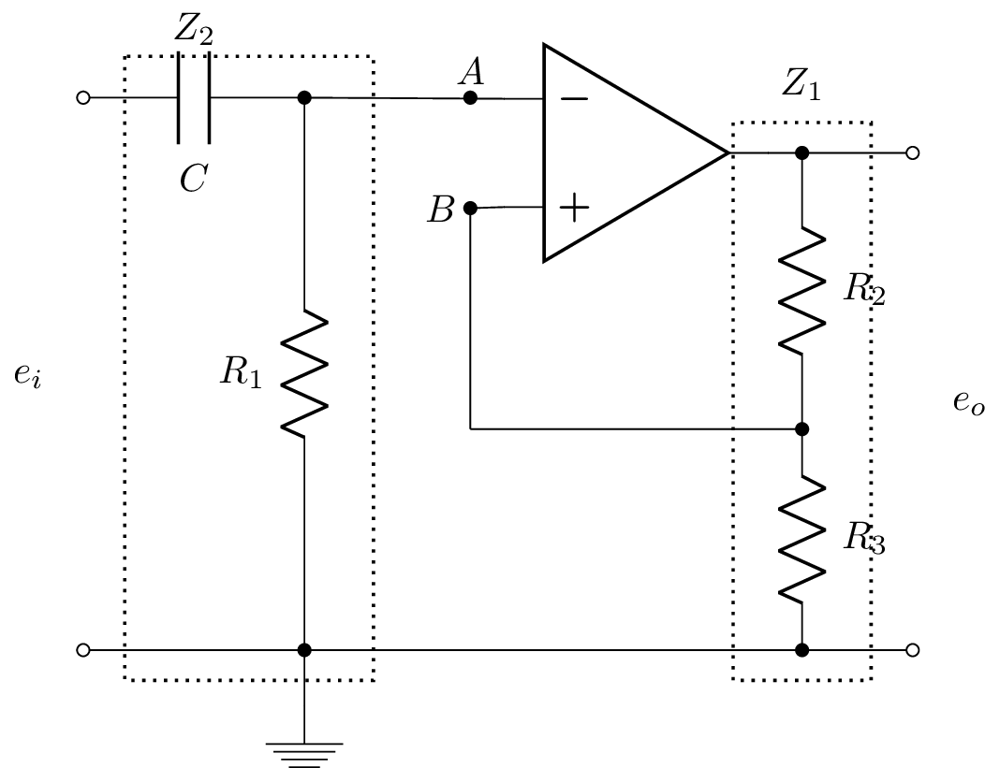

\documentclass{standalone}
\usepackage[american]{circuitikz}
\usepackage{graphicx}
\usepackage{mathrsfs}
\usepackage{latexsym,amssymb,amsmath}
\newcommand{\equal}{=}
\begin{document}
\begin{circuitikz}
%\draw (0,4) to [open,v^>=$v_1(t)$,o-o] (0,0) -- Open Short
\draw (0,6) to [open,l_=$e_i$,o-o] (0,1) % input
(0,6) to [C, l_= $C$,-*] (2,6) %C
(1,6) node[] (Z2) {} % used for drawing rectangle
(2,6) to [R, l_=$R_1$,-*] (2,1) %R1
node[] (Z2end) {} % used for drawing rectangle
(2,1) -- (2,0.5) node[ground]{} %ground
(5, 5.5) node[op amp] (opamp) {}
(2, 6) to [open, -*] (3.5,6) node[above]{$A$}
(2,6) -- (opamp.-)
(3.5,5) node[left]{$B$} to [short,*-] (opamp.+)
(opamp.out) to [short,-*] (6.5,5.5)
node[] (Z1) {} % used for drawing rectangle
to [R, l^=$R_2$,-*] (6.5,3) %R2
to [R, l^=$R_3$, -*] (6.5,1)
node[] (Z1end) {} % used for drawing rectangle
(6.5,3) -- (3.5,3) % connect B to middle of resistors
(3.5,3) -- (3.5,5) % vertical connection to B
(6.5,5.5) -- (7.5,5.5)
(7.5,5.5) to [open,l^=$e_o$,o-o] (7.5,1) % output
(0,1) -- (7.5,1) % wire
;
\draw[thick,dotted] ($(Z1.north west)+(-0.5,0.15)$) rectangle ($(Z1end.south east)+(0.5,-0.15)$);
\draw (Z1.north) +(0,0.5) node {$Z_1$};
\draw[thick,dotted] ($(Z2.north west)+(-0.5,0.25)$) rectangle ($(Z2end.south east)+(0.5,-0.15)$);
\draw (Z2.north) +(0,0.5) node {$Z_2$};
\end{circuitikz}
\end{document}Created by David Li